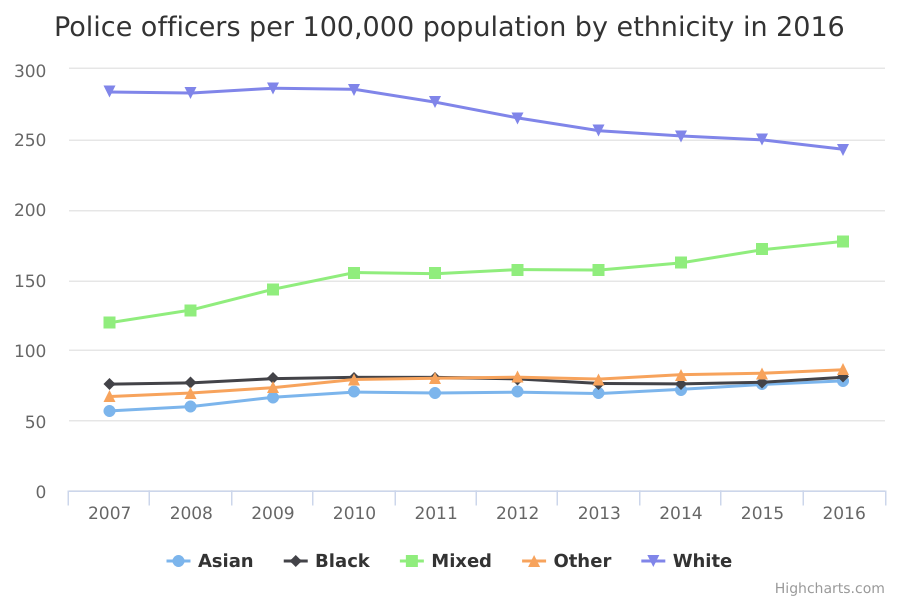
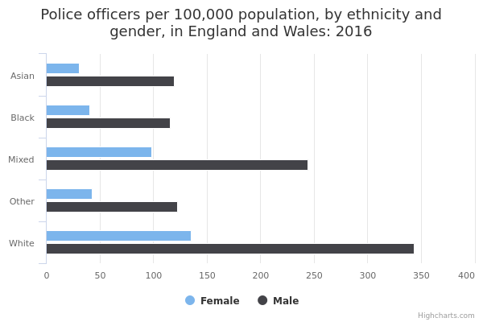

Police workforce
The main facts and figures show that:
-
as of March 2016, 5.9% of police officers came from an ethnic minority group, and 94.1% were White
-
the proportion of police officers from an ethnic minority has increased year on year, from 3.9% in 2007 to 5.9% in 2016
-
in the population of England and Wales as a whole, 14% of people belong to an ethnic minority group
Things you need to know
Staff are counted by FTE (full-time equivalent), in other words, staff who work 2.5 days each week are counted as 0.5 of a staff member. Special constables are volunteers with variable hours, so are counted per head.
Data is sourced from the personnel records for the 43 police forces in England and Wales and the British Transport Police.
Population estimates are based on the 2011 Census.
Since the British Transport Police cover all of England and Wales, a rate per population per region has not been calculated. Similarly, the City of London Police serve a very large daytime population, compared to the number of residents, and so it is not meaningful to show a rate per population for this force.
The data on the proportion of police workers from an ethnic minority does not include police staff whose ethnicity is not known, or is undisclosed. Nor are officers who didn't disclose their ethnicity counted towards the total number of people in the police workforce, when calculating percentages.
What the data measures
This data measures the numbers of police workers from an ethnic minority group compared to the total population for that ethnicity within each of the 43 Police Force Areas: for example, the number of Black officers in South Yorkshire Police compared to the total number of Black people in South Yorkshire.
Police workers include the total number of police officers, staff, police community support officers (PCSOs), designated officers and special constables, as at 31 March each year.
Why these ethnic categories were chosen
For the personnel records of police forces in England and Wales, staff are asked to place themselves within the following 5 broad ethnic categories:
- White
- Mixed/Multiple ethnic groups
- Asian/Asian British
- Black/African/Caribbean/Black British
- Other ethnic group
Police workforce by ethnicity

Percentage of police officers compared to percentage of population by ethnicity from 2007 to 2016
| Asian | Black | Mixed | Other | White | ||||||
| 2007 | 1.5 | 6.8 | 1.0 | 3.3 | 1.0 | 2.2 | 0.5 | 1.7 | 96.1 | 86.0 |
|---|---|---|---|---|---|---|---|---|---|---|
| 2008 | 1.6 | 6.8 | 1.0 | 3.3 | 1.1 | 2.2 | 0.5 | 1.7 | 95.9 | 86.0 |
| 2009 | 1.7 | 6.8 | 1.0 | 3.3 | 1.2 | 2.2 | 0.5 | 1.7 | 95.6 | 86.0 |
| 2010 | 1.8 | 6.8 | 1.0 | 3.3 | 1.3 | 2.2 | 0.5 | 1.7 | 95.3 | 86.0 |
| 2011 | 1.9 | 6.8 | 1.0 | 3.3 | 1.3 | 2.2 | 0.5 | 1.7 | 95.2 | 86.0 |
| 2012 | 2.0 | 6.8 | 1.1 | 3.3 | 1.4 | 2.2 | 0.6 | 1.7 | 95.0 | 86.0 |
| 2013 | 2.0 | 6.8 | 1.1 | 3.3 | 1.5 | 2.2 | 0.6 | 1.7 | 94.9 | 86.0 |
| 2014 | 2.1 | 6.8 | 1.1 | 3.3 | 1.5 | 2.2 | 0.6 | 1.7 | 94.7 | 86.0 |
| 2015 | 2.2 | 6.8 | 1.1 | 3.3 | 1.6 | 2.2 | 0.6 | 1.7 | 94.4 | 86.0 |
| 2016 | 2.4 | 6.8 | 1.2 | 3.3 | 1.7 | 2.2 | 0.7 | 1.7 | 94.1 | 86.0 |
Summary
This data shows that:
-
as of March 2016, 124,066 police officers were employed in the 43 police forces in England and Wales (excluding British Transport Police)
-
there were 7,218 police officers from a Black, Asian, Mixed or Other ethnic minority group, the equivalent of 5.9% of the total
-
there were 114,437 White police officers, the equivalent of 94.1% of the total
-
Black officers made up 1.2% of the total, Asian officers made up 2.4%, officers of Mixed ethnicity made up 1.7% and 0.7% of officers identified as Chinese or as belonging to the Other ethnic group
Download image and data
Police workforce by ethnicity and area
Number of police officers compared to number of people per 100,000 population by ethnicity and police force area in 2016
| Asian | Black | Mixed | Other | White | ||||||
| All - including BTP | 78 | 3,820,390 | 81 | 1,864,890 | 177 | 1,224,400 | 86 | 956,837 | 243 | 48,209,395 |
|---|---|---|---|---|---|---|---|---|---|---|
| Avon & Somerset | 24 | 33,005 | 45 | 30,923 | 135 | 28,277 | 39 | 15,380 | 156 | 1,491,970 |
| Bedfordshire | 45 | 81,480 | 44 | 29,725 | 108 | 18,456 | 0 | 8,753 | 209 | 476,647 |
| Cambridgeshire | 28 | 39,535 | 37 | 10,174 | 94 | 16,029 | 24 | 12,572 | 179 | 726,531 |
| Cheshire | 55 | 12,794 | 0 | 3,264 | 86 | 10,423 | 0 | 5,230 | 194 | 995,998 |
| Cleveland | 83 | 17,419 | 32 | 3,156 | 69 | 5,762 | 45 | 4,434 | 230 | 526,456 |
| Cumbria | 137 | 2,913 | 345 | 579 | 156 | 2,504 | 62 | 1,605 | 224 | 492,257 |
| Derbyshire | 110 | 36,871 | 47 | 10,090 | 91 | 14,351 | 41 | 7,281 | 179 | 949,845 |
| Devon & Cornwall | 32 | 11,694 | 168 | 4,106 | 128 | 15,645 | 63 | 9,467 | 145 | 1,627,306 |
| Dorset | 19 | 10,694 | 62 | 3,208 | 114 | 9,507 | 17 | 5,995 | 166 | 714,637 |
| Durham | 117 | 5,114 | 95 | 1,058 | 259 | 4,240 | 33 | 3,030 | 181 | 605,364 |
| Dyfed-Powys | 47 | 4,274 | 117 | 856 | 153 | 3,262 | 50 | 2,008 | 208 | 504,714 |
| Essex | 21 | 38,954 | 14 | 34,679 | 156 | 27,635 | 26 | 15,374 | 176 | 1,608,308 |
| Gloucestershire | 52 | 10,522 | 78 | 5,150 | 104 | 8,661 | 133 | 3,004 | 183 | 569,647 |
| Greater Manchester | 53 | 246,094 | 55 | 74,097 | 185 | 60,710 | 51 | 53,504 | 266 | 2,248,123 |
| Gwent | 69 | 10,076 | 157 | 3,185 | 104 | 5,547 | 28 | 3,569 | 197 | 554,377 |
| Hampshire | 43 | 57,352 | 33 | 17,445 | 106 | 30,905 | 67 | 20,911 | 151 | 1,771,378 |
| Hertfordshire | 53 | 64,119 | 38 | 31,401 | 126 | 27,497 | 13 | 15,550 | 188 | 977,495 |
| Humberside | 41 | 12,191 | 133 | 4,499 | 110 | 8,185 | 0 | 7,493 | 176 | 885,279 |
| Kent | 66 | 54,186 | 26 | 22,879 | 154 | 27,283 | 58 | 15,636 | 191 | 1,607,681 |
| Lancashire | 54 | 108,784 | 56 | 5,377 | 267 | 16,300 | 35 | 10,397 | 195 | 1,320,035 |
| Leicestershire | 55 | 155,740 | 63 | 24,623 | 180 | 20,520 | 10 | 19,110 | 211 | 797,704 |
| Lincolnshire | 90 | 5,579 | 229 | 2,561 | 144 | 6,190 | 0 | 2,839 | 151 | 696,484 |
| London, City of | N/A * | N/A * | N/A * | N/A * | N/A * | N/A * | N/A * | N/A * | N/A * | N/A * |
| Merseyside | 58 | 18,851 | 137 | 14,552 | 338 | 20,954 | 88 | 21,529 | 261 | 1,305,303 |
| Metropolitan Police | 110 | 1,386,619 | 90 | 1,088,447 | 229 | 404,990 | 147 | 404,874 | 573 | 4,881,636 |
| Norfolk | 31 | 9,809 | 152 | 4,609 | 140 | 10,027 | 55 | 5,425 | 178 | 828,018 |
| North Wales | 32 | 6,336 | 67 | 1,497 | 141 | 4,950 | 45 | 4,450 | 214 | 670,704 |
| North Yorkshire | 40 | 9,914 | 0 | 3,618 | 161 | 7,456 | 0 | 6,233 | 172 | 769,206 |
| Northamptonshire | 51 | 22,581 | 84 | 16,923 | 95 | 14,182 | 18 | 5,444 | 170 | 632,822 |
| Northumbria | 37 | 37,782 | 56 | 9,006 | 250 | 12,447 | 22 | 17,871 | 239 | 1,343,747 |
| Nottinghamshire | 83 | 48,248 | 62 | 27,287 | 85 | 30,981 | 19 | 15,465 | 194 | 969,501 |
| South Wales | 36 | 35,804 | 39 | 12,738 | 173 | 17,762 | 36 | 18,889 | 234 | 1,198,458 |
| South Yorkshire | 80 | 54,660 | 61 | 25,752 | 118 | 20,791 | 12 | 24,745 | 197 | 1,217,653 |
| Staffordshire | 28 | 35,148 | 78 | 8,551 | 98 | 14,095 | 0 | 7,376 | 157 | 1,032,327 |
| Suffolk | 18 | 10,972 | 44 | 6,854 | 154 | 12,472 | 21 | 4,670 | 151 | 693,195 |
| Surrey | 39 | 54,037 | 75 | 12,430 | 131 | 23,554 | 47 | 18,687 | 164 | 1,023,682 |
| Sussex | 16 | 40,865 | 28 | 14,246 | 84 | 30,036 | 80 | 16,352 | 168 | 1,505,433 |
| Thames Valley | 37 | 192,541 | 46 | 69,013 | 163 | 55,986 | 46 | 32,586 | 207 | 1,919,646 |
| Warwickshire | 126 | 22,747 | 23 | 4,443 | 75 | 7,949 | 86 | 4,647 | 154 | 505,688 |
| West Mercia | 74 | 21,715 | 134 | 5,062 | 134 | 13,466 | 106 | 5,657 | 171 | 1,176,516 |
| West Midlands | 74 | 493,551 | 62 | 164,069 | 140 | 96,204 | 17 | 63,498 | 325 | 1,919,138 |
| West Yorkshire | 46 | 280,764 | 72 | 46,476 | 114 | 48,126 | 54 | 30,874 | 234 | 1,819,818 |
| Wiltshire | 46 | 17,379 | 66 | 6,089 | 31 | 9,794 | 25 | 4,006 | 155 | 642,869 |
Summary
This data shows that:
-
of the 43 forces, the Metropolitan police in London had the highest proportion of ethnic minority police officers, with 12.6% from an ethnic minority
-
the number of ethnic minority police officers in London reflects the city’s population as a whole: 40.2% of people in London come from ethnic minorities, the largest number for any part of England and Wales
-
in the West Midlands, 9% of police officers were from an ethnic minority, compared with 29.9% of the total population in the region
-
in Leicestershire, 7.7% of police officers were from an ethnic minority, compared with 21.6% of the total population in the region
-
Cheshire, North Wales and Dyfed-Powys had the smallest proportion of ethnic minority officers (0.8% in all three areas), a figure that reflected the relatively small number of people from ethnic minorities living in these areas
Download data
Police workforce by ethnicity and rank
Percentage and number of officers by ethnicity and rank in 2016
| Asian | Black | Mixed | Other | White | ||||||
| Constable | 2.6 | 2,437 | 1.3 | 1,201 | 1.9 | 1,764 | 0.7 | 701 | 93.6 | 88,568 |
|---|---|---|---|---|---|---|---|---|---|---|
| Sergeant | 1.7 | 320 | 0.9 | 161 | 1.2 | 231 | 0.4 | 81 | 95.7 | 17,741 |
| Inspector | 1.6 | 87 | 0.8 | 47 | 1.1 | 64 | 0.4 | 23 | 96.1 | 5,385 |
| Chief Inspector | 0.9 | 14 | 0.7 | 11 | 1.4 | 22 | 0.1 | 1 | 96.9 | 1,516 |
| Superintendent | 2.0 | 16 | 0.9 | 7 | 1.5 | 12 | 0.1 | 1 | 95.4 | 752 |
| Chief Superintendent | 1.9 | 6 | 1.6 | 5 | 0.9 | 3 | 0.3 | 1 | 95.3 | 302 |
| Chief Officer | 0.6 | 1 | 0.6 | 1 | 0.0 | 0 | 0.0 | 0 | 98.9 | 172 |
Summary
This data shows that:
- senior ranks (chief inspector, superintendent, chief superintendent and chief officers) in the 43 police forces of England and Wales had a lower proportion of ethnic minority officers (3.6%) compared to constables (6.4%) and other ranks
Download data
Police workforce by ethnicity and type of police work
Percentage of population compared to percentage of people in different police roles by ethnicity in 2016
| Asian | Black | Mixed | Other | White | ||||||
| Community Support Officer | 4.1 | 6.8 | 2.8 | 3.3 | 1.5 | 2.2 | 1.1 | 1.7 | 90.5 | 86.0 |
|---|---|---|---|---|---|---|---|---|---|---|
| Designated Officer | 2.6 | 6.8 | 2.9 | 3.3 | 1.4 | 2.2 | 0.6 | 1.7 | 92.4 | 86.0 |
| Police Officer | 2.4 | 6.8 | 1.2 | 3.3 | 1.7 | 2.2 | 0.7 | 1.7 | 94.1 | 86.0 |
| Police Staff | 3.1 | 6.8 | 2.4 | 3.3 | 1.0 | 2.2 | 0.7 | 1.7 | 92.9 | 86.0 |
| Special Constable | 6.3 | 6.8 | 1.9 | 3.3 | 2.1 | 2.2 | 1.3 | 1.7 | 88.4 | 86.0 |
| Traffic Warden | 0.0 | 6.8 | 0.0 | 3.3 | 0.0 | 2.2 | 0.0 | 1.7 | 100.0 | 86.0 |
Summary
This data shows that:
-
there are fewer people from an ethnic minority background working as police officers than in other roles within the police workforce
-
the Special Constabulary was the most ethnically diverse part of the police workforce: in March 2016, 11.6% came from an ethnic minority
-
in March 2016, 7.1% of police staff and 9.5% of police community support officers came from an ethnic minority
Download data
Police workforce by ethnicity and gender

Percentage of police officers by ethnicity and gender from 2007 to 2016
| Asian | Black | Mixed | Other | White | ||||||
| 2007 | 1.2 | 0.3 | 0.7 | 0.3 | 0.7 | 0.3 | 0.4 | 0.1 | 73.6 | 22.5 |
|---|---|---|---|---|---|---|---|---|---|---|
| 2008 | 1.3 | 0.3 | 0.7 | 0.3 | 0.8 | 0.3 | 0.4 | 0.1 | 72.6 | 23.3 |
| 2009 | 1.4 | 0.3 | 0.7 | 0.3 | 0.8 | 0.3 | 0.4 | 0.1 | 71.5 | 24.1 |
| 2010 | 1.5 | 0.4 | 0.7 | 0.3 | 0.9 | 0.4 | 0.4 | 0.1 | 70.6 | 24.7 |
| 2011 | 1.5 | 0.4 | 0.8 | 0.3 | 1.0 | 0.4 | 0.4 | 0.1 | 70.0 | 25.2 |
| 2012 | 1.6 | 0.4 | 0.8 | 0.3 | 1.0 | 0.4 | 0.5 | 0.1 | 69.2 | 25.7 |
| 2013 | 1.6 | 0.4 | 0.8 | 0.3 | 1.0 | 0.4 | 0.5 | 0.1 | 68.7 | 26.2 |
| 2014 | 1.7 | 0.4 | 0.8 | 0.3 | 1.1 | 0.4 | 0.5 | 0.1 | 68.0 | 26.7 |
| 2015 | 1.8 | 0.5 | 0.8 | 0.3 | 1.2 | 0.5 | 0.5 | 0.1 | 67.5 | 26.9 |
| 2016 | 1.9 | 0.5 | 0.9 | 0.3 | 1.2 | 0.5 | 0.5 | 0.2 | 66.8 | 27.3 |
Summary
This data shows that:
-
as of March 2016 there were more male police officers than female police officers coming from an ethnic minority group (6.3% and 5.1% respectively)
-
since March 2007, the proportion of male officers from an ethnic minority group has increased from 3.9% to 6.3%, and the proportion of female officers from an ethnic minority group has increased from 3.9% to 5.1%
Download image and data
Methodology and type of data
Type of data
Admin data from police forces' HR systems
Purpose of data source
Forces keep records of all staff employed by the force on their HR and payroll systems. Ethnicity and gender data are often used by forces as part of their own diversity monitoring schemes.
Methodology
Data collection from each of the 43 police forces in England and Wales plus British Transport Police.
Quality and methodology informationFurther technical information
Data is quality assured by the Home Office and confirmed by police forces before publication.